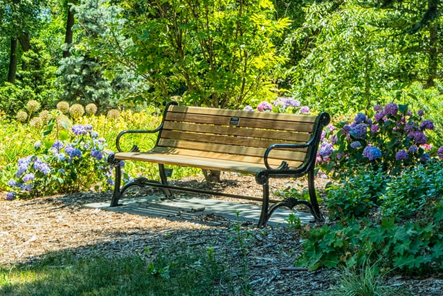
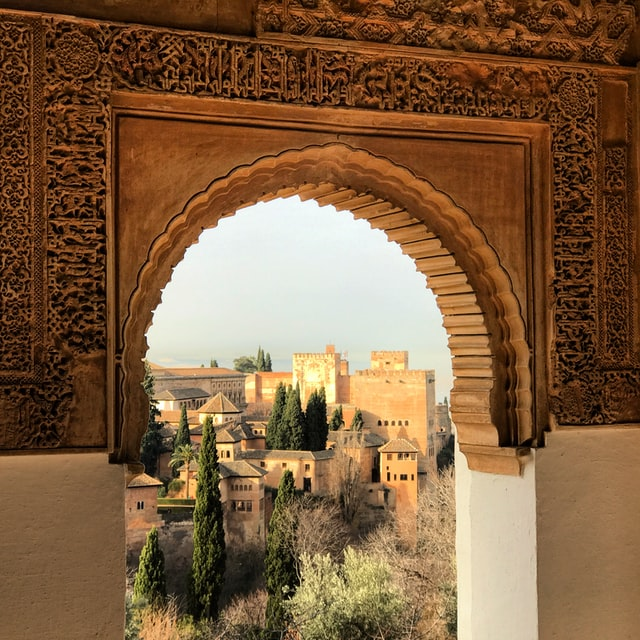
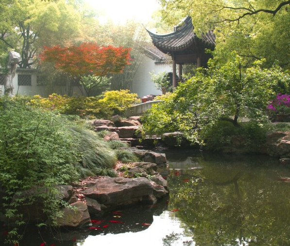

Gardens of Refuge
If you like reading about philosophy, here's a free, weekly newsletter with articles just like this one: Send it to me!
According to one historian, the garden, once ‘a place for man to escape from the threats of nature’, later became a ‘refuge from men’. Initially, gardens were made for practical purposes, like growing fruits and vegetables. Over time, though, they took on new functions. Some proclaim the dominion of humans over nature; others celebrate specific individuals. Other gardens are less triumphal, being places for gentle exercise, pleasure, engaging with nature, and convivial entertainment. Across many of the world’s cultures, gardens became part of discourses about our relationship to nature, beauty, and the good life.

The idea of gardens as arenas for creative agency or convivial reverie will be familiar to modern gardeners, as will the uses of gardens as symbols of human dominion or personal glory. It’s also still common to talk of gardens as ‘sanctuaries’ or ‘refuges’. One might ‘escape’ into the garden for an hour to cool off after a frustrating day at the office or seek sanctuary from the demanding hubbub of the world by retreating to the sheltered peace of a shaded patio.

Photo by Doug Kelley on Unsplash
In some cultures, however, the idea of gardens as refuges took on a deeper significance. Robert Pogue Harrison opens his erudite book on gardens by calling them a ‘sanctuary’ from the ‘rage, death, and endless suffering’ of human history. Some gardens offer ‘a kind of haven, if not a kind of heaven’. Beyond the garden wall, one finds the sprawling world of artificiality, competitiveness, and violence; within those walls, there is calm, natural vitality, and goodness. Talk of refuge and sanctuary here takes on an extended, moralised sense – a conviction that the real dangers from which we need protecting are not predators and storms, but the psychological, moral, and aesthetic ills of human life. In modern garden literature, the same examples recur – the stress, pollution, time-pressures, and busyness of modern life. Accompanying such claims are, however, references to the moral failings of the human world.

Robert Pogue Harrison, Gardens: An Essay on the Human Condition. Some gardens offer ‘a kind of haven, if not a kind of heaven’. Beyond the garden wall, one finds the sprawling world of artificiality, competitiveness, and violence; within those walls, there is calm, natural vitality, and goodness. (Ian James Kidd)
Amazon affiliate link. If you buy through this link, Daily Philosophy will get a small commission at no cost to you. Thanks!
When one experiences gardens in this way, we can talk of gardens of refuge. A good example are the ‘paradise gardens’, popular in Islamic countries from the 7th to 13th centuries CE, some of which remain today, like Bagh-e Doulatabad in Yazd, Iran. The word paradise derives from an Old Persian word, pairidaeza, meaning ‘walled garden’, a favourite Quranic image for Heaven. Paradise gardens were carefully designed to represent nature as God originally intended it — lush, fertile, verdant, well-watered, bountiful as well as beautiful, in which unworried humans could enjoy peace and plenty. Unfortunately, after our expulsion from Eden, such verdant bliss was lost as the natural world became harsh and inhospitable and we forever lost those paradisiacal places.
A paradise garden can, of course, be experienced as a cool place to sit and escape the sun. But at a deeper moral and spiritual level, they are tangible reminders of a former state of forfeited goodness. The fact we seek out spaces of sanctuary implies that our current state is one of ever-surrounding struggle, discomfort, and corruption. Why seek refuge if the world is safe for goodness?
For the historian, Stephanie Ross, the tradition connecting gardens to ‘retreat, contemplation, and repose’ contains a ‘darker resonance’. Gardens of refuge are reminders of the grim theological fact that the goodness confined to these gardens was once common throughout the whole world. For Christians, too, a darker resonance is the fact that two gardens — Eden and Gethsemane — were the sites of severe episodes in the moral history of humankind.

Photo by Jorge Fernández Salas on Unsplash
Paradise gardens are a specific kind of garden of refuge, shaped by the doctrines and narratives of Middle Eastern monotheistic religion. Their significance owes to a vision of human beings as corrupted, fallen creatures inhabiting a world that ceased to be hospitable to their flourishing. Clearly, though, not everyone nowadays subscribes to those theological doctrines. In other cultural traditions, like China, gardens of refuge were animated by other visions of the moral condition of humanity. Before we move to China, though, we need to consider what those visions must be like if talk of gardens as moral refuges is to become intelligible and compelling.
Refuge and misanthropy
A refuge is sought when one needs shelter or protection from a threat. Usually, we use the term to refer to protection from war, natural disasters, or political persecution, but in an extended sense, one can seek refuge from less tangible dangers. The rhetoric of refuge has a long, complicated history, as David E. Cooper explains in a recent essay on this website. In some cases, a person seeks out a moral refuge: a space offering protection from the grim, corrupting realities of the human world. In these cases, the moral refuge is rooted in a condemnatory vision of that world, one that deserves to be called misanthropic.

David E. Cooper: The Rhetoric of Refuge
The rhetoric or metaphor of refuge from the world has largely disappeared from religious, social and ethical debate. The contrast with the past is striking.
By that word, I don’t mean what my dictionary means — the hatred or distrust of human beings or humanity. Certainly, some misanthropes are hateful, but others adopt less extreme attitudes of resignation or lament, while others work hopefully toward a rectification of our awful condition.
This variety makes sense if we recognise that misanthropy is essentially a negative, critical judgment, not an emotion or feeling. The misanthrope condemns the collective moral character of humanity as it has come to be: they see the ambitions, practices, and institutions of human life as shot through with all sorts of vices and failings. Which ones stand out depend on the particular misanthrope: contemporary ‘eco-misanthropes’, for instance, tend to focus on greediness, exploitativeness, selfishness, and wastefulness. For a misanthrope, these failings are not confined to particular people, or certain terrible conditions, like civil war — they are ubiquitous throughout the human world.
A person with a misanthropic vision of human life may respond to it in different ways. One historically popular strategy has been to create or seek out spaces relatively insulated from those failings — a secluded community, say, where one can let one’s virtues breathe freely, away from the corrupting forces of the world. The great Prussian philosopher, Immanuel Kant, called this type of misanthrope the ‘Fugitive from Mankind’. They seek escape from a world they find unbearably corrupt and corrupting. Kant speaks of escape to hidden valleys or distant islands of the kind described in ‘Robinsonades’, the Robinson Crusoe-style stories of virtuous people who find it easier to live good and godly lives away from the corrupt masses.
An obvious problem is that few us of would or could resort to such radical strategies of escape. Our refuges need to be closer to home, more easily accessible, less detached from our everyday environments and routines. Ideally, our refuges should be located in the everyday world, but, nearby, at a safe distance. Moreover, these refuges must be able to protect and, perhaps, revitalise virtues and sensibilities damaged by exposure to the world: a refuge should have an appropriate location, design, and ambience. In this Hermits series, we see many candidate refuges: an interesting one are certain gardens.
A garden can offer refuge from the moral corruptions of the mainstream human world in three related ways. To start with, a calm, secluded garden offers respite: restorative relief from the distractions, pressures and temptations of life. What is corrupting about the world its relentless pace and imperatives to rush about, compete and ‘wow’ people, all of which makes it ever-harder to achieve and maintain one’s attentiveness, composure, focus, and equanimity. Respite, though, will not be enough: the damage done to our character or soul by exposure to that world is already done.
A second function of a garden of refuge, then, is to enable the restoration of our damaged virtues and sensitivities. While quietly busying oneself with watering and planting, one understands Goethe’s remark that a gardener can attain a ‘tranquil eye’ and ‘unruffled consistency’, an attentive and caring diligence showing itself in ‘doing, each season of the year … precisely what needs to be done’. Gardening allows us to restore such atrophied virtues as care, gentleness, humility, and simplicity which in turn foster further qualities, like contentment and equanimity.
A third function of gardens of refuge is to encourage periods of reflection. The frenetic pace of life does not afford time to stop, step back, and reflect. For a misanthrope, lives that flux between unceasing activity and intense fatigue deprive us of opportunities for critical moral self-reflection. To flourish, one needs at least occasional opportunities to reflect on the quality and direction of one’s own life.

A rhetoric of slowness and speed has been used by philosophers since the ancient periods to characterise and assess different ways of life.
Reflection often requires, in turn, certain receptive conditions — being in an environment that is still but not static and attractive but not overstimulating. We can find these conditions in many places, such as forests and churches, but some favourite examples will also include gardens.
Of course, there are some — like the Fugitive misanthropes — who only find appropriate peace in isolation, living ‘off the grid’ in a modern updating of Walden. I suspect most of us, though, seek reflective spaces nearer to home. The calm, seclusion, stillness, and unshowy beauty of a garden are all clearly conducive to absorbed reflection. Presumably that is why gardens and groves were admired by those ancient moral traditions, like Buddhism and Epicureanism, for which tranquillity and ataraxia were vital moral goods. (Epicurus lived in The Garden, recall, while the Buddha and his monks spent vassa — the retreat during the rainy season — in a secluded forest grove).
A moving testimony to the respite, restoration, and reflection one can find in certain gardens is offered by Andrew Marvell’s 1681 poem, ‘The Garden’:
And Innocence, thy sister dear?
Mistaken long, I sought you then
In busy companies of men.
Your sacred plants, if here below,
Only among the plants will grow;
Society is all but rude
To this delicious solitude.
If one finds the human world ‘rude’, then it is natural to desire ‘delicious solitude’ and seek out some space of ‘Fair Quiet’. For Marvell, as for many others, this can be found in a garden. What they offer are intimate spaces, located within one’s world but also secluded within it, private and peaceful. Anyone can enjoy calm peaceful solicitude of the sort Marvell found in that garden, of course. A nice garden could be enjoyed as a nice place, without any complicated appeals to misanthropic visions of humankind. Still, gardens of refuge will have a special significance for those with misanthropic visions. To see why, we can turn to the gardens of refuge in the Chinese tradition.
Chinese gardens of refuge
A misanthropic neighbour of mine says that he finds in his garden what he can’t ‘reliably find anymore’ in the human world — calm, gentleness, care, wholesomeness — consistent with his aphoristic decree that ‘plants, not people, are good’. By escaping into his garden, that neighbour finds a refuge from a degenerating and corrupted world he cannot abide. Within Chinese garden discourses, too, we find desires for refuge from the pervasive moral failings of the wider world.
One of the most famous Chinese texts on gardens is Ji Cheng’s Yuányě, ‘The Craft of Gardens’, of 1631. It announces that a well-made garden should offer ‘a pure atmosphere’, in which ‘the common dust of the world is far from our souls’. The ‘dust’, here, refers to ambitious, frantic, contentious desires and distractions that ought to be washed away, leaving us calm and ‘pure’.
Photo by Lingchor on Unsplash
A Ming dynasty scholar, Chen Fuyao, said his garden offered a restorative refuge from ‘the dust and grime of the city’, the moral and spiritual contaminants of mainstream life. An orderly garden, for Chen, should perform a double function: offer us ‘protection against everything that is most detrimental to the spirit’ and, further, provide a hospitable place to ‘casually read parts of Laozi and Zhuangzi, or practice brush strokes’, before withdrawing to ‘a bamboo couch with close friends’.
Such remarks testify to a desire for the respite, restoration, and reflection one can find in the stillness, peacefulness and amity of garden life. Moreover, a garden is all the more significant because, as for my neighbour, it contrasts so starkly with the restlessness, bustle, and demands of the wider world. The scholar-recluse, Zheng Yuanxun, writing in his transparently named ‘Garden of Reflections’, liked to ‘compare watering the trees and the flowers of this garden’ with such corrupting worldly obsessions as ‘establishing merit and making a reputation for oneself’.
Ji Cheng and his fellow Chinese garden-dwellers illustrate one very striking theme in the history of Chinese gardens. Clearly, though, not all Chinese gardens were experienced as moral refuges. After all, across its history, China has had many types of gardens: imperial gardens, hunting parks, monastery or temple gardens, Edo stroll gardens, and others. Only some count as gardens of refuge, the most obvious, perhaps, being the literati gardens.
During the Tang and Song dynasties (618-1279 CE), busy periods of social, artistic, and technological change, it became common for aged or jaded scholars to retire to secluded gardens and devote themselves to a quietly cultured life. In the peace of their garden, the literati could enjoy reading, music, painting and other edifying arts, safely withdrawn from the busyness of the world. Tang poets testify to desires for such quieter, more morally hospitable ways of life, perhaps the most famous being the poet, musician, and painter, Wáng Wéi:
and don’t care about things of this world
I’ve found no good way to live
and brood about getting lost in my old forests.
The wind blowing in the pines loosens my belt,
the mountain moon is my lamp while I tinkle
my lute.
Unable to maintain a ‘good way to live’ amid the world, Wáng and others retreated into their gardens — secluded refuges lit by the moon. Written in the reflective quiet of the gardens, these poets condemns the human world. The herb gardener, Han K’ang, feared his reputation for honesty would ‘entangle him in the snares of life’, for an honest person in a corrupt world is vulnerable to exploitation. Ruan Ji called the human world a ‘grease-filled torch’ that ‘burns itself out’, one from which a wise person withdraws, as from a raging fire, to a safe distance, into a refuge.
What these poets share is a morally critical vision of human life as a harsh realm filled with ‘snares’ and risks of ‘entanglement’. They found their world to be an uninhibited arena of vices — cruelty, aggressiveness, competitiveness, forcefulness, impatience, selfishness … the list could go on. None embraced the Fugitive strategy, fleeing into the mountains, despite enduring myths of Daoist-inspired sages abandoning the world to wander the mountains (this is, indeed, a myth — most of those sages, like Zhuangzi, remain participants in the world, if uncomfortably, by pursuing deliberately inconspicuous lives).

Jichang Garden in Wuxi (1506–1521). Public Domain, via Wikipedia, cropped.
Chinese literati who retired to gardens clearly shared Confucius’ view that human beings cannot ‘run with the birds and the beasts’. A genuinely human life needs cultured arts and sociability, hardly things one finds in the wild. For Confucius, cultured activities are essential to a ‘consummate life’, one only pursuable in the human world of culture, ritual, and tradition. Another aspect of consummate life, though, is civic participation, the ideal, cherished by Confucius, of being a productive subject of the state. How does one square that with quietist retreat into a garden?
The answer lies in misanthropy, though, perhaps oddly, it begins with the Confucian celebration of participation in political life. A person of virtue takes office, said the Master, emulating the wise governance of ancient sages, like the Yellow Emperor. Still, Confucians recognised to their dismay that the world sometimes becomes too morally degraded for the virtuous ‘consummate’ person to ply their trade.
In the Analects, there are many testimonies of the awfulness of the world — condemnation of greedy rulers, disrespect for tradition, toadies and traitors, selfishness and philistinism, children forsaking their filial duties and much else. Confucius himself often felt compelled to abandon moral activism and escape off to sea. After many centuries, things had gotten even worse, and later Confucian literati felt the world had become so corrupted their only option was to retreat. During that time, an ‘eremetic’ Confucian tradition emerged: morally dejected scholar-officials would withdraw from public office in protest. If even the Confucians abandoned public office, the thought went, then things really must be bad.
Such people were still Confucian at heart, so could not withdraw into the wild, even if they had imbibed enough Daoism to appreciate the value of natural places. As a sort of compromise, perhaps, many of them sought refuge in spaces shaped by both nature and culture — gardens.
‘No life could be happier than this’
The question is why literati gardens appealed to these morally dejected scholar-officials, people animated by Confucian confidence in cultured arts and a ‘consummate life’. After all, one might expect to find Daoists in a garden — indeed, they are often called ‘gardeners of the cosmos’, people seeking convergence with nature while still ‘honouring the human’. Confucians, surely, are more at home in the city. The explanation is that things are more complicated. For the Chinese literati, educated people steeped in Confucian teachings, there are at least three reasons to be attracted to a garden.
The literati gardens are, to start with, located within the precincts of the human world, even if, by careful design, they remain secluded. It is not an isolated location, far away in a hidden valley. Those gardens were also ‘humanised’ spaces, reflecting human interests and values, and not utterly wild, ‘untouched’ natural places. Gardens are, after all, shaped, arranged, and maintained according to cultural traditions and practices.
Image by Rajiv Bajaj on Unsplash
A second feature of literati gardens is their ambience or mood, a carefully crafted quality that reflected the virtues or qualities desired by their morally crumpled owners. Confucius spoke of the ‘harmonious ease’ of a consummate person, a person of graceful demeanour, never agitated or distracted. A good garden reflects those virtues and, by doing so, helps one exercise them by offering hospitable conditions — secluded and calm, peaceful and uncrowded, artfully arranged to afford pleasing experiences that reward attentiveness and sensitivity to beauty. Indeed, writers tend to describe garden of refuge using a vocabulary of virtue — of calmness, contentment, peacefulness, tranquillity. Moreover, these are qualities of people and life whose abject absence from the human world, for the misanthrope, justifies condemnation.
A final attractive feature of literati gardens is that they are highly hospitable to the performance of the edifying practices that can restore moral, imaginative, and aesthetic sensibilities damaged by exposure to the world. A garden of refuge shouldn’t be a place of lassitude, sloth, or mindless inactivity. The mood may be mellow, for sure, but that should be interpreted as an opportunity to engage in activities enhanced by the still tranquillity of a place. Secluded behind the garden walls, sheltered under its shady boughs, one finds apt conditions for reading poetry, studying the classics, and moral reflection.
Wáng Wéi, for one, enjoyed ‘peace’ and the ‘wind blowing in the pines’ in a pleasing experience of meditative reverie. Confucians could find gardens to be apt theatres for cultured practices. Shen Fu and his wife spent their days together at Cāng Làng Tíng, The Blue Waves Pavilion, ‘doing nothing but reading, discussing the classics, enjoying the moonlight or idly admiring the flowers’. What they found was respite, restoration, and opportunity for reflection, not simply because the pavilion was pretty and quiet, but because it was an ideal space for experiences and activities that enlivened their sensibilities, enthusiasms, and spirit.
The difficulties of exercising virtues in a harried, frenetic world makes a garden all the more attractive for a misanthrope, too. A still space, calm and tranquil, uncluttered by human ‘artifice’, offers shelter from the temptations and demands of life. In a refuge, one finds safety, a secure place for life to continue better than before. Wáng Wéi said that being in a garden was a means of ‘loosening our belt’, of loosening up one’s mind and imagination.
Anyone can appreciate that experience, of course, but it has a special significance for a misanthrope. For them, gardens of refuge are little pools of the calm, virtue, and goodness increasingly rare in the turbulent wider world — green moral spaces affording much-needed moral respite and restoration. Perhaps this explains the poignancy of Shen Fu’s remark, about his time in his garden, that ‘no life could be happier than this’.
◊ ◊ ◊

Ian James Kidd on Daily Philosophy:
Cover image by Rajiv Bajaj on Unsplash